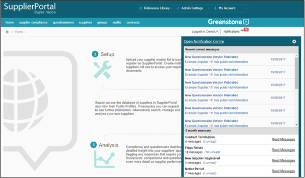
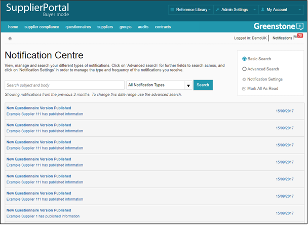

The notification page enables you to manage all your notifications.
Hover over the ‘Notifications’ button and icon that is visible at the top right-hand corner of all pages to open the summary pane. This will show you any unread messages, along with a 3-month summary of flags raised, newly registered suppliers, document expiry, fully published suppliers and supplier expiries.

Click ‘Open notification centre’ to view all messages, and to search across them using basic or advanced search options.
